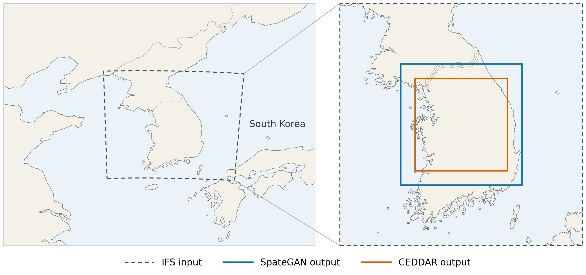
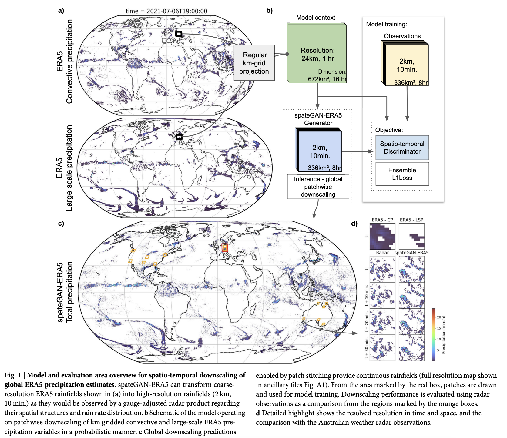
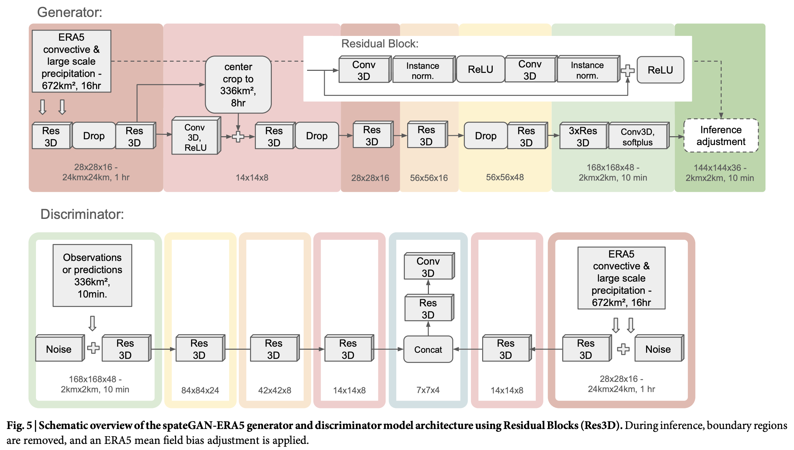
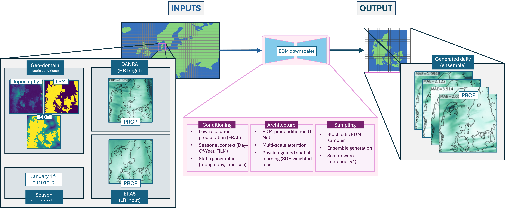
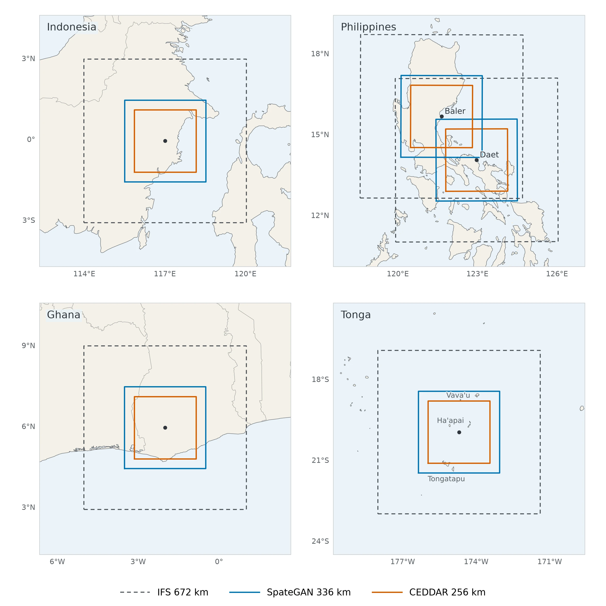

DI Lab built SpateGAN-IFS, a downscaling system that turns the 24 km, three-hourly ECMWF IFS forecast into 2 km rainfall every 30 minutes, trained and scored it on Korean radar (PEAK HSP), and ran it unchanged in Indonesia, the Philippines, Ghana, and Tonga.
Reading the numbers: rain is given in millimetres, and 1 mm equals 1 litre of water per square metre. Intensity is given in mm/hour: roughly, below 2.5 is light, 2.5–10 moderate, 10–50 heavy, and above 50 violent.
Both forecasts are scored against radar on the same 2 km grid. IFS is interpolated onto that grid before scoring, so the comparison asks whether downscaling adds realistic 2 km detail while keeping or improving the skill of its input.
All scores use the same Korean samples and area for the model and IFS. Validation (489 sequences, four seasonal blocks in 2025) also chose the checkpoint, so its scores are optimistic. The reserved test (1,526 sequences, forecast cycles 28 September – 31 December 2025) was opened once, after the checkpoint was frozen.
On the reserved test SpateGAN-IFS has higher FSS than IFS (0.400 against 0.352) and finds heavy rain that IFS misses (CSI at 8 mm/hour 0.073 against 0.001). On validation it has lower CRPS (1.038 against 1.103). IFS keeps the higher CSI overall and the higher FSS on validation.
| Model | Validation | Reserved test | ||||||
|---|---|---|---|---|---|---|---|---|
| FSS | CSI | CRPS | Rain ratio | FSS | CSI | CRPS | Rain ratio | |
| IFS | 0.409 | 0.215 | 1.103 | 0.88 | 0.352 | 0.194 | 0.242 | 1.15 |
| SpateGAN-IFS | 0.363 | 0.163 | 1.038 | 0.77 | 0.400 | 0.170 | 0.351 | 1.90 |
Higher FSS and CSI and lower CRPS are better.
On validation, IFS has higher FSS at all 14 lead times. The gap narrows from 0.01–0.09 at 18–33 hours to 0.02–0.06 at 51–57 hours, mainly because IFS loses spatial agreement with lead time. SpateGAN-IFS has lower CRPS than IFS at 11 of the 14 leads. The published SpateGAN, with its input adapted to IFS and no Korean training, reaches FSS 0.379, CRPS 1.113 and rain ratio 0.90 on validation. Scores by threshold and lead time are in S3.
SpateGAN-IFS is too dry on the summer-weighted validation blocks and produces about twice the observed rain in autumn and early winter.
On validation SpateGAN-IFS has a rain ratio of 0.77 (IFS 0.88). It reaches 5 mm/hour at 44% and 8 mm/hour at 16% of the observed frequency, against 60% and 30% for IFS. On the reserved test its rain ratio is 1.90 (IFS 1.15), and it produces heavy rain three to four times too often (frequency bias 3.31–3.46 at 3–8 mm/hour). It also detects heavy rain that IFS misses: CSI at 8 mm/hour is 0.073 against 0.001. The rain amount therefore depends on the season, and the output needs a seasonal volume correction before it is shown as amounts.
Every product underestimates extreme accumulations: at the station of each of the two record downpours, IFS and SpateGAN-IFS reach 10–24% of the observed total.
| Case | AWS | Window | Station | Radar | IFS | SpateGAN-IFS |
|---|---|---|---|---|---|---|
| Seosan record rainfall [1] | 129 | 16–17 Jul 2025 | 512 | 519 | 122 | 104 |
| Gunsan record downpour [2] | 140 | 6–7 Sep 2025 | 295 | 122 | 29 | 32 |
| Moderate convective rain | 538 | 21–22 Jul 2025 | 64 | 58 | 4 | 0.3 |
| Dry winter day | All | 19–20 Feb 2025 | 0 | 0 | ≤ 0.1 | ≤ 0.2 |
At Seosan the station and radar agree (512 against 519 mm), which confirms station positions and timing. At Gunsan the radar pixel holds much less than the station (122 against 295 mm). Nearby stations agree better with radar (233 against 255 mm at AWS 733), so the difference is specific to this station.
The viewer shows all six Korean cases on one clock. IFS holds each three-hour field for six half-hour frames, and radar is the scoring truth. AWS stations appear in their own panel, coloured by the rain in each 30-minute window. The station chart shows cumulative rain at the selected station, and its vertical line follows the clock.
The three ensemble members are nearly identical, so their range is too narrow to serve as an uncertainty estimate.
On validation the member spread is 0.265 against an MAE of 1.155, in mm per three hours. Only 3.9% of observations fall inside the members’ 10–90% range on validation, and 3.3% on the reserved test. The member range should not be shown as an uncertainty band.
| Limit | Consequence |
|---|---|
| Training and scoring in Korea only | Skill in other regions, with tropical convection and different terrain, is unknown |
| Reserved test covers autumn and early winter only | No unbiased score for summer |
| Rain amount changes with the season | A seasonal volume correction is needed before amounts are shown |
| Record downpours reach 10–24% of the station total | Model peak amounts are unsuitable for flood thresholds |
| Three nearly identical ensemble members | No usable uncertainty estimate |
IFS provides the rainfall input. Radar (PEAK HSP), prepared from KMA radar data [3], is the training and scoring target over Korea; the PEAK paper is under review. KMA AWS stations are point references in Korea. PAGASA radar [4] is a visual reference in the Philippines, and published event reports give event facts and station totals for Korea, the Philippines, and Tonga.
| Data | Role | Resolution | Period used |
|---|---|---|---|
| ECMWF IFS total precipitation [5] | Model input and reference forecast | 24 km, three-hour amountsa | Feb 2024 – Dec 2025 |
| Radar (PEAK HSP) | Training and scoring target, Korea | 2 km, half-hour amounts | Feb 2024 – Dec 2025 |
| NOAA GFS precipitation [6] | Pretraining only | 24 kmb | 2021–2023 |
| KMA AWS (via PEAK) | Point reference, Korea | 30 minutes | Case windows |
| PAGASA radarc | Visual reference, Philippines | 30 minutes | Case windows |
| Published event reports | Event facts and station totals | Station totals | Case dates |
a Forecast cycles 00 and 12 UTC. b After regridding. c Covers part of each Philippine model area.
IFS cumulative total precipitation is differenced into three-hour amounts on a 28 × 28 grid; cycles with a materially negative increment are excluded whole. Radar rain rates are integrated into half-hour amounts, and six complete half-hours make a three-hour amount. Missing frames stay missing, and nothing is imputed. Normalization statistics come from the training pool only.
SpateGAN output is scored on its central 144 × 144 cells. SpateGAN and CEDDAR have different output areas and sample formats, so their scores cannot rank one model against the other.

Deep generative models are now a common way to add fine-scale detail to rainfall. Generative adversarial networks (GANs) [7] have been used to downscale time-evolving radar rainfall [8], to post-process and downscale global forecasts over the United Kingdom [9], and to correct and sharpen global ensemble forecasts over the continental United States [10]. The GAN-based DGMR produces radar nowcasts [11]. Diffusion models [12] have followed, for example CorrDiff for kilometre-scale atmospheric downscaling [13]. This report adapts one GAN of this family, SpateGAN, to IFS forecasts and compares it with one diffusion model, CEDDAR.
SpateGAN [14] is a generative adversarial network. A generator produces rainfall sequences at fine resolution, and a discriminator teaches it what realistic rain looks like. Each generator run gives one possible sequence, and three runs form the ensemble. The published model downscales hourly 24 km ERA5 [15] rainfall to 10-minute, 2 km fields over Germany. SpateGAN-IFS starts from the released weights and retrains the input layers for one IFS channel.
| Detail | Published SpateGAN | SpateGAN-IFS |
|---|---|---|
| Input | ERA5 convective and large-scale precipitation, 2 channels, hourly, 24 km | IFS total precipitation, 1 channel, three-hourly, 24 km |
| Target | German radar adjusted to station data | Radar (PEAK HSP), Korea |
| Output | 2 km, 10 minutes, 48 × 168 × 168 | 2 km, 30 minutes, 48 × 168 × 168a |
| Training | Germany, from scratch | From the released weights, input layers trained |
a Half-hours; the central 24 hours of a 48-hour input.


CEDDAR [16] is a diffusion model that starts from noise and removes it step by step, guided by the coarse rainfall field. It was trained from random initialization on the same Korean data as a comparison and is described in S2.
The IFS training pool runs from 1 February 2024 to 27 September 2025, outside the validation blocks, and ends one day before the first test cycle. Shared forecast cycles, input times, and target times are excluded across splits, and the leakage audits passed. SpateGAN-IFS trains for 1,000 steps from the released weights with the input layers trainable, batch 9, and learning rate 1e-4 for generator and discriminator.
Validation uses four 8-day blocks in 2025: 13–21 February, 5–13 May, 16–24 July, and 2–10 September; each block starts at 00:00 UTC on its first date and ends at 00:00 UTC on its last date.
A fixed rule chose the checkpoint among steps 250, 500, 750, and 1,000: the highest three-hour ensemble FSS on the full validation set, with ties going to lower CRPS and then to the earlier checkpoint. The rule picked step 1,000. An earlier checkpoint, trained on data that overlap the reserved test period, was not used.
Runs with GFS pretraining first train on all eligible 2021–2023 GFS forecasts and then on the same IFS training pool; runs without it train on the IFS pool only. The rule, fixed before the test, adopts pretraining only if the paired 95% bootstrap interval of the FSS gain (10,000 draws of 7-day blocks of forecast cycles) lies entirely above zero, CRPS, CSI, and absolute volume bias are no worse, and both training runs pass.
With GFS pretraining the FSS of SpateGAN-IFS rose from 0.400 to 0.406 (+0.006, 95% CI −0.005 to +0.009). GFS pretraining raised FSS in both SpateGAN runs, but both 95% intervals include zero, so the rule fixed before the test keeps the model without GFS pretraining; for CEDDAR it lowered FSS in both runs.
Scores use three-hour amounts unless stated. IFS is interpolated onto the 2 km radar grid before scoring, so both forecasts are scored on the same cells. FSS (fractions skill score) [17] measures how well a forecast places rain: it compares the fraction of cells above a threshold within a neighbourhood, and 1 is perfect. CSI (critical success index) [18] counts hits against hits, misses, and false alarms at a threshold. CRPS (continuous ranked probability score) [19, 20] is the error of the ensemble as a distribution, in mm; for a single forecast such as IFS it equals the mean absolute error (MAE). The rain ratio is total forecast rain divided by total observed rain, and frequency bias is how often a forecast exceeds a threshold divided by how often radar does; 1 is unbiased for both. The ensemble FSS is the mean over five thresholds and seven neighbourhood sizes (one grid cell, 4, 8, 16, 32, 64, and 128 km), and CSI is the mean over the five thresholds. MAE and detection scores use the ensemble mean, and CRPS uses all three members. Counts and sums are pooled over all samples before ratios are calculated, and undefined scores are left out.
| Metric | Meaning |
|---|---|
| MAE | Average absolute error in rain amount, from the ensemble mean |
| CRPS | Error of the ensemble distribution against the observed amount; equals MAE for IFS |
| POD / FAR / CSIa | Hit rate / false-alarm ratio / critical success index at a threshold |
| Frequency bias | Forecast exceedances divided by observed exceedances; 1 is unbiased |
| Ensemble FSS | Fractions skill score of the ensemble exceedance fractions, mean of 35 threshold–scale pairs |
| Rain ratio | Total forecast rain divided by total observed rain; 1 is unbiased |
| Volume biasb | (Rain ratio − 1) × 100% |
| Spread / coverage | Mean member standard deviation; share of observations inside the members’ 10–90% range |
a The suffix -M marks the mean over the five thresholds. b The GFS decision rule uses its absolute value.
All times are UTC and mark the end of each interval. Maps show the mean rain rate in mm/hour over each panel’s interval (half-hour amounts × 2, three-hour amounts ÷ 3); values below 0.1 mm/hour are left unshaded, and missing data are grey. Station points use the same colour scale. AWS windows end 8 minutes after each frame time to match radar scan timing.
The final runs used 72.3 GPU-hours, measured over 69 jobs, so compute is a minor cost. SpateGAN-IFS takes 0.4 s per 24-hour case on one V100, excluding data preparation. A CEDDAR training stage takes about 1.4 h on the IFS pool and 3.3 h on the GFS pool.
A second training run with a different random start used identical data and settings. Training involves chance: the starting values of the trained layers and the order of the training samples. A seed is the number that fixes this chance, so a run can be repeated exactly. The first run (seed 42) is SpateGAN-IFS, reported throughout the main text, because it beats the second run (seed 43) on every test score; the second run is the backup.
The two runs differ by up to 0.028 FSS at the same training step. On validation the second run reaches FSS 0.368 and CRPS 1.039. On the reserved test it reaches FSS 0.384, CRPS 0.373 and rain ratio 2.06. With GFS pretraining its test FSS rose from 0.384 to 0.404 (+0.020, 95% CI −0.004 to +0.023). At the case stations it gives 121 mm at Seosan and 40 mm at Gunsan.
CEDDAR is a diffusion model: it starts from noise and removes it step by step, guided by the coarse rainfall field. The published model downscales daily ERA5 rainfall from about 30 km to 2.5 km over Denmark, with the DANRA regional reanalysis as its target. Here it was trained from random initialization for 60 epochs on the same Korean data, with three members and 56 denoising steps. It predicts each three-hour field independently, so consecutive fields are not a learned time sequence. The selected checkpoint has the lowest validation loss (epoch 33).
| Detail | Published CEDDARa | CEDDAR, this report |
|---|---|---|
| Input | ERA5 precipitation, daily, about 30 km | IFS total precipitation, three-hourly, resampled to the 2 km grid |
| Target | DANRA regional reanalysis | Radar (PEAK HSP), Korea |
| Output | 2.5 km, daily, 128 × 128 | 2 km, three-hourly, 128 × 128 |
| Training | Denmark | From random initialization |
a Configuration B0.

On validation CEDDAR has lower CRPS than IFS (0.996 against 1.067) and lower FSS (0.327 against 0.416), with rain ratio 0.93. On the reserved test its FSS falls to 0.271 (IFS 0.396) and its rain ratio is 1.62. Across the four CEDDAR test runs the rain ratio ranges from 0.88 to 3.42, and most candidate checkpoints produce 1–27% of the observed rain. GFS pretraining made it worse in both runs (−0.028 FSS, 95% CI −0.053 to +0.006; −0.122, 95% CI −0.163 to −0.052).
In the cases, CEDDAR gives 179 mm at Seosan, 33 mm at Gunsan, 1.2 mm in the moderate convective case and 0 mm on the dry winter day. The viewer shows the Seosan case over the 256 km × 256 km CEDDAR area, with each three-hour field held for six half-hour frames.
CEDDAR is not recommended: its FSS is far below that of IFS, and its training loss does not guarantee a usable rain amount, so checkpoint choice dominates its results.
Each lead has 57–326 scored windows, so single points are noisy.
SpateGAN-IFS is below IFS in every cell of the grid. Half-hour FSS uses trailing one-hour windows, so it is not comparable with the three-hour FSS above.
The rule picks the highest three-hour ensemble FSS, and it picked step 1,000 in every run.
The Korean-trained model runs unchanged in four more regions, with the same grids and the same weights and normalization. No radar archive there matches the training target, so the runs are shown and not scored.

Six wet days in 2025 were chosen from IFS by rain amount, wet-area coverage, and date separation, before model output was inspected. Over the model area, SpateGAN-IFS ranges from below the IFS average (May) to about twice it (December).
| Case | Date (UTC) | IFS average | SpateGAN-IFS averagea |
|---|---|---|---|
| February | 21 Feb 2025 | 10 | Higher |
| May | 27 May 2025 | 19 | Lower |
| July | 6 Jul 2025 | 19 | Higher |
| August | 18 Aug 2025 | 9 | Slightly higher |
| October | 21–22 Oct 2025 | 17 | About the same |
| December | 19 Dec 2025 | 23 | About twice |
a Relative to the IFS average over the same area.
IFS holds each three-hour field for six half-hour frames.
Three 24-hour cases centred on the PAGASA radar sites at Daet and Baler, including two days of Tropical Storm Trami (Kristine), when Daet recorded 528.5 mm on 22 October 2024, its highest daily rainfall on record [21, 22]. PAGASA radar serves as a visual reference, and grey in the radar panel is outside the site’s coverage.
Two 24-hour cases, shown without reference data.
The wettest IFS day of 2025 in the Tonga area, 11 May 2025, when a low-pressure storm brought heavy rain and gale warnings. Published reports give 142.8 mm at Koloa (Vava’u) and 118 mm at Lapaha (Tongatapu) [23]. The area lies west of the date line.